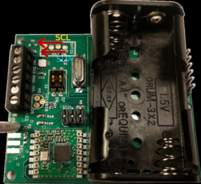

ecoRadio¶
El equipo de radio esta diseñado para medir parámetros como son la temperatura, la humedad o la energía en ubicaciones donde es difícil disponer de suministro de energía eléctrica.
La alimentación de este dispositivo se hace mediante pilas del tipo AA que le dan una autonomía de mas de un año Por defecto puede medir Temperatura, Humedad y pulsos procedentes de un contador de gas u de otro tipo
La carcasa de EcoRadio puede ser de interior o de exterior con un aislamiento IP65
Principales características¶
Sensor externo: DS18B20 external temperature sensor. See hardware wiki for connections
Alimentación: 2 x AA
RF Radio: RFM69CW 433Mhz
Carcasa de interior y de exterior(IP65)
Duración de la batería superio a dos años
Rango de medida de humedad: 0-80%RH;
Rango de medida de temperatura -40~125 °C
Precisión Humedad +-3%RH
Precisión Temperatura: +-0.4 degC
Para el diseño de este dispositivo se ha tomado como base EmonTH de Open Energy Monitor